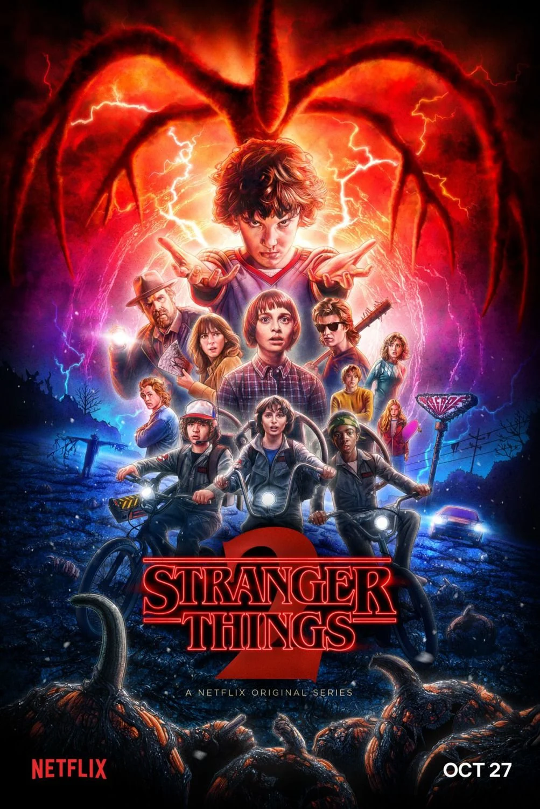

Tornen els Strangers, més brutals i implacables que mai.
Quan s'assabenten que la seva última víctima, Maia, continua viva, tornen per acabar el que havien començat. Sense cap lloc al qual fugir, ni ningú en qui confiar, Maia ha de sobreviure a un altre horrible capítol de terror, mentre els tres emmascarats la persegueixen, disposats a matar a qualsevol que s'interposi en el seu camí.